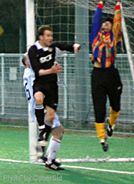
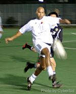
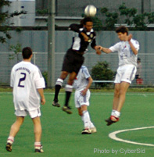
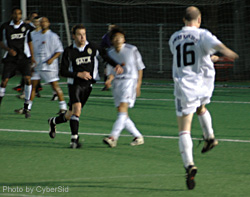

15th May Hachioji Park.
BMW's & Porches may help you pick up birds but they won't help you pick up a TML title if they can't get you to a match on time. Rather than take a train or even follow the map on the TML site, Swiss Kickers decided to trust the Satellite Navigation system of the lead car in a convoy of 5, to reach the ground an hour late after a detour around the wilds of Saitama.
|  |
Swiss stand-in Keeper Okubo helps a cross over the bar as Giles Legg challenges. |
Without enough time left to play a full official match, rules dictated that Swiss Kickers forfeit the match and 1 point, handing Hibs the title on a silver platter. Sala FC having been at the ground for 2 hours, waiting to play and further putting off the Start of defender Stephen Hubert's stag night, still wanted to have their crack at the Swiss albeit only for 60 minutes. Due to difficulties in scheduling before the award party on June 5th, and the fact that a rescheduled match wouldn't effect the outcome of the top three, it was decided that a shortened match now would be acceptable but considered as 'rescheduled'.
Not the best of ways to finish what has been a great season but an end none the less. In some ways it made for an even bigger battle between Sala and Swiss with both teams riled
for different reasons and putting in strong challenges to show it.
|  |
Ian Brown-Peterside takes down a ball while closely guarded by a Sala defender. |
The first half started with Sala the more settled, having had the longest warm-up in their history while Swiss were trying to start from cold. There were early shouts for a Swiss penalty though, when
a melee in the Sala box resulted in cries of hand ball. Whether the ref thought the ball struck a chest, or if it were ball to hand, didn't matter as play continued and the ball was cleared. Sala
had the best opportunity of the 1st half though when they managed to put a 'sitter' over the bar from a couple of yards out.
So at half time the deadlock hadn't been broken and with the precious minutes ticking away, the game was soon restarted.
Swiss were the first to get on the scoresheet when David Pratt picked the ball up just outside the Sala box and drove his shot into the bottom left corner. Swiss striker Ian Brown-Peterside,
who's missed most of Swiss' TML matches, went on the hunt for number 2 and thought he'd won a penalty when he was nailed by a Sala defender while turning to shoot. The referee however was pointing to the corner
flag having seen nothing wrong with the tackle.
|  |
Swiss' Captain Kirk being out jumped by Sala striker Jody Brooks. |
This spurred Sala back into action and some uncharacteristic sloppy defending by Swiss allowed in Giles Legg to score the equalizer.
With glory in their eyes, Sala continued to pressure and were rewarded with a 2nd goal, again from Giles as the Swiss defence seemed to have switched to autopilot, guided by the same navi systems in their cars.
they tried in vain to come back but Andrew Price in the Sala goal wasn't about to let in any more goals. Jody Brooks, Sala's tall, dreadlocked striker was causing Swiss' captain kirk all sorts of difficulties as
his huge strides outpaced everyone in the Swiss defence. The final goal came after good work by Sala down the right flank saw the ball hit into the Swiss box, where it was gratefully met by Jody Brooks.
As Far as Sala were concerned, it was icing on the cake as they cleared any doubts about the conclusion to the league.
|  |
Graeme MacDonald hits it back 'in the mixer' as Swiss try to recover a goal. |
The apologetic Swiss captain was left to rue the combination of mistakes that left Swiss as runners up in the league and contemplate his next challenge - the Hong Kong 7's - where his KFC squad will meet
Celtic, Rangers & PSV. Good luck.
The Sala boys happily went off to help Stephen Hubert get hammered on his stag night before getting married next weekend. Congratulations Stephen, hope you have a great wedding.
So Hibernian walk off with the trophy as the 1st TML Division 1 Champions only having dropped points to the Swiss in a match where they dominated, going 1-0 ahead but let in a couple of soft goals to
lose 2-1 in the absence of their outstanding keeper, Hitoshi Ono. It's going to be a tougher battle next season though as teams will play each other twice in the first full 18 match season.
CONGRATULATIONS TOKYO HIBERNIAN |